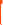
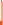

001
https://abacor.com


PRODUCT LAUNCH FOR THE LEADING AI NATIVE SOFTWARE FOR ACCOUNTANTS.
NO COMPROMISE MARKETING WEBSITES THAT CONVEY YOUR VISION OF THE BRAND TO YOUR AUDIENCE>
[V] VIEW PROJECT
/
cnvrtlabs/projects:
WHAT DO YOU WANNA SEE?

EXPLORE ALL